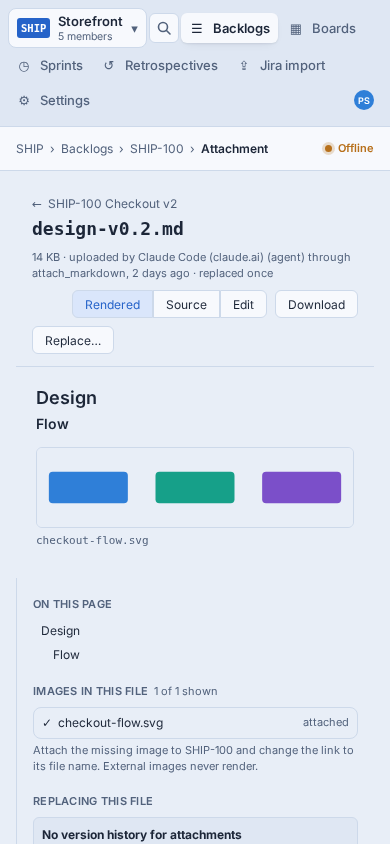
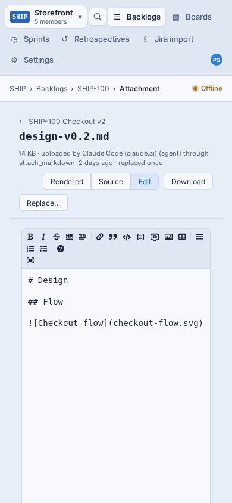
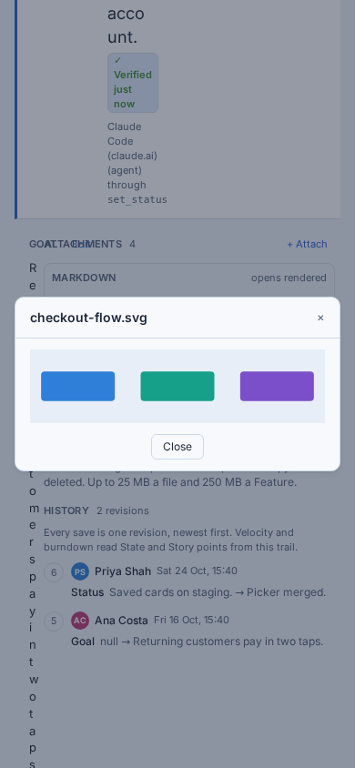

Designs for the SHIP-715 story under SHIP-707 (mobile web). It covers the Markdown attachment page (Rendered, Source, Edit, side panel) and the image preview a Feature's image attachments open. Below 900px the desktop page already drops to one column, so these designs take over at that width. Above it nothing changes. The phones below are live: tap, scroll and open sheets inside them.
design/mobile/attachment.html
Inside the SHIP-713 touch shell
The real screens at iPhone width, shot from the component test harness with the same fixtures as the page screenshots. The menu strip at the top is the old shell, which SHIP-713 replaces with the touch shell; these designs cover what sits under its top bar.



Every screen uses ShipLean's own tokens. On a phone, body text goes up to 15 px and every target is at least 40 px. The top bar is SHIP-713's touch shell, and only it is sticky: the page header scrolls away and the breadcrumb keeps the file name in view. The tags link to the decisions further down.
../screens/shared.js.A rough map against today's code in src/ShipLean.Client/src/features/attachment, to check the 3-point estimate. No server changes: the page's one request already returns the outline, images and siblings.
| Piece | Today | Change | Size |
|---|---|---|---|
| Header | AttachmentHeader, ViewToggle, ReplaceButton | Below 900 px: a back row with ⋯, a name button that opens the files sheet, a short facts button, and the full-width segmented control. Collapses to one line on scroll. Download, Replace… and Copy link move into the ⋯ action sheet. | M |
| Side panel | AttachmentSidePanel (4 panels) | The same panels, rendered in three bottom sheets. One new BottomSheet (a dialog with a grab handle and a scrim) that SHIP-713 and SHIP-714 can reuse. | M |
| Contents pill | none | A floating button that follows the current heading (IntersectionObserver over the outline anchors). Hidden when the outline has fewer than 2 entries. | S |
| Markdown body | Markdown component | CSS only: tables and pre scroll sideways inside a wrapper with a fade, and images get max-width:100%. Tapping an attached image opens the viewer. This applies wherever Markdown renders, so descriptions benefit too. | S |
| Edit | AttachmentEditor (MDEditor, height 560) | The editor fills the space that's left, the toolbar is one row that scrolls, Fullscreen is dropped, and Save and Cancel go in a bar fixed to the bottom. | S–M |
| Image viewer | ImagePreview (a Dialog, 720 px) | A new full-screen viewer with pinch and double-tap zoom, swiping through the item's images, thumbnails, and a ⋯ menu (Download, Copy link, Open original). The gestures are the bulk of the work (D4). | M–L |
| PDF in a new tab (D6) | AttachmentFileResult serves only images inline, and every file gets Content-Security-Policy: sandbox | Serve application/pdf inline too, and open PDF rows with target="_blank" (the row itself is SHIP-714's). Spike first: the sandbox CSP can stop the browser's built-in PDF viewer, so check iOS Safari and Android Chrome before relaxing anything. If it does, look at a sandbox that allows the viewer, or fall back to download. | S + spike |
| Measure | screen.viewed gains viewport (SHIP-713) | Two events, both with viewport: attachment.viewer_opened (from: rail or markdown) and attachment.contents_jumped. Each week, compare them with attachment-page views on phones, and compare phone views per week before and after release with desktop views as the baseline. | S |
| Tests | CT specs and desktop page shots | A phone viewport for the attachment page shots (rendered, contents sheet, edit, viewer), plus CT tests for opening and closing the sheets, the pill, and the viewer's next and previous. | M |
With D4 A and D6 B as decided, this reads more like 5 points than 3. The viewer's gestures and the PDF spike are most of the difference.
Settled in review on 7 Nov. D6 went against the recommendation. D8 was amended afterwards to fit the touch shell's rule that only the top bar is sticky (SHIP-713 D7).
| # | Question | Decided |
|---|---|---|
| D1 | Where does the side panel (outline, images, no-history note, other files) go? | Bottom sheets: the Contents pill, the facts line, the file name. |
| D2 | Where do Download, Replace… and Copy link go? | A ⋯ action sheet. |
| D3 | Can you edit on a phone? | Yes: a full-screen editor, a one-row toolbar, and Save fixed to the bottom. |
| D4 | How far does the image viewer go? | Full screen, pinch and double-tap zoom, swiping through the item's images. |
| D5 | Does tapping an image in a Markdown file open the viewer? | Yes, at that image, with the item's other images to swipe to. |
| D6 | What do other files do? | PDFs open in a new tab; everything else downloads. Changed from the recommendation (download, as today). Needs PDFs served inline, and a spike on the sandbox CSP. |
| D7 | When does the phone layout take over? | At 900 px and below, the touch shell's one breakpoint. |
| D8 | Should the header shrink once you scroll? | Amended: the page header scrolls away and the top bar's breadcrumb keeps the file name in view. The pick in review was a header that shrinks to the name and ⋯, but SHIP-713 D7 allows only the top bar to be sticky. ⋯ is one scroll up. |
| D9 | Does the viewer replace the desktop dialog? | Phones only for now; the desktop keeps its dialog. |